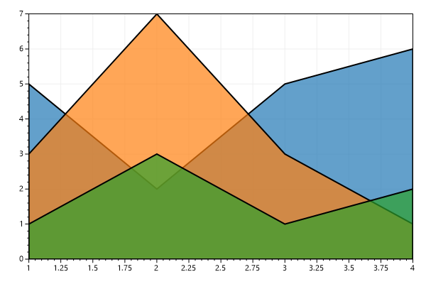
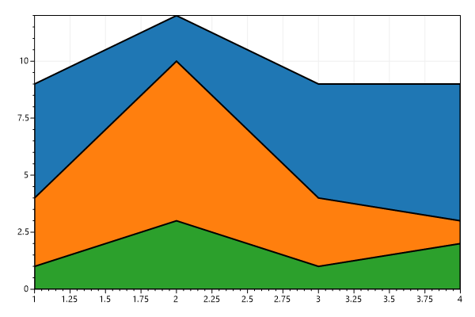
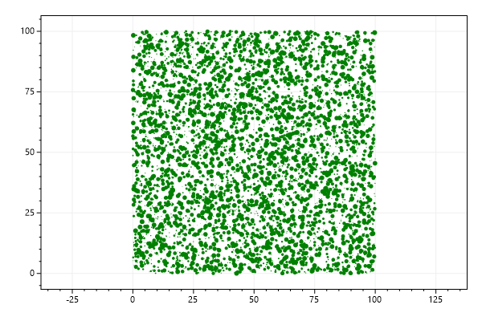

<html>

<head>
    <title>ScottPlot 4.1.4-beta Cookbook: Plottable: Polygon</title>
    <meta name="viewport" content="width=device-width, initial-scale=1">
    <link rel="stylesheet" type="text/css" href="style.css">
    <link rel="shortcut icon" href="favicon.ico">
    <script async src='https://cdn.jsdelivr.net/gh/google/code-prettify@master/loader/run_prettify.js'></script>
    <script async src='https://www.googletagmanager.com/gtag/js?id=UA-560719-1'></script>
    <script async defer src="https://buttons.github.io/buttons.js"></script>
    <script>
        window.dataLayer = window.dataLayer || [];
        function gtag() { dataLayer.push(arguments); }
        gtag('js', new Date());
        gtag('config', 'UA-560719-1');
    </script>
</head>

<body>

    <div id="backsplash" style="background-color: #144371;">&nbsp;</div>

    <div id="content">

        <div id="pageAboveArticle">
            <div id="headerBlock">

                <div id="headerMenu">
                    <div class='menuButton'><a href='https://swharden.com/scottplot'>ScottPlot Website</a></div>
                    <div class='menuButton'><a href='https://swharden.com/scottplot/cookbook'>Latest Cookbook</a></div>
                </div>

                <div class='title'>
                    <a href="https://swharden.com/scottplot">ScottPlot</a>
                    <span style='opacity: .2;'>Cookbook</span>
                </div>

                <div class='subtitle'>free and open-source plotting library for .NET</div>
                <div id="githubButtonWrapper">
                    <a class="github-button" href="https://github.com/swharden/scottplot" data-size="large"
                       data-show-count="true" aria-label="Star on GitHub" data-text="Star on GitHub"></a>
                </div>
            </div>
        </div>

        <article>
            <div id="md2html">
                <h1><a href='./index.html' style='color: black;'>ScottPlot Cookbook</a>: <i><a href='plottable_polygon.html' style='color: black;'>Plottable - Polygon</a></i></h1>
<blockquote><b>&#9888;&#65039;</b> <strong>Documentation is version-specific:</strong> This page was generated for <code>ScottPlot 4.1.4-beta</code><br> Additional documentation and more version-specific cookbooks are on the <a href='https://swharden.com/scottplot' style='font-weight: 600;'>ScottPlot Website</a></blockquote>
<h2><a href='#polygon_quickstart' name='polygon_quickstart' style='color: black;'>Polygon Quickstart</a></h2>
Polygons are 2D shapes made from pairs of X/Y points. The last point connects back to the first point, forming a closed shape. Polygons can be optionally outlined and optionally filled. Colors with semitransparency are especially useful for polygons.
<pre class='prettyprint cs'>var plt = new ScottPlot.Plot(600, 400);

double[] xs1 = { 2, 8, 6, 4 };
double[] ys1 = { 3, 4, 0.5, 1 };
plt.AddPolygon(xs1, ys1);

double[] xs2 = { 3, 2.5, 5 };
double[] ys2 = { 4.5, 1.5, 2.5 };
plt.AddPolygon(xs2, ys2, plt.GetNextColor(.5), lineWidth: 2);

plt.SaveFig("polygon_quickstart.png");</pre>
<div class='center'></div>
<h2><a href='#polygon_filledlineplot' name='polygon_filledlineplot' style='color: black;'>Filled Line Plot</a></h2>
Polygons can be used to create 2D shapes resembling filled line plots. When mixed with semitransprent fills, these can be useful for displaying data.
<pre class='prettyprint cs'>var plt = new ScottPlot.Plot(600, 400);

// create sample data
double[] xs = { 1, 2, 3, 4 };
double[] ys1 = { 1, 3, 1, 2 };
double[] ys2 = { 3, 7, 3, 1 };
double[] ys3 = { 5, 2, 5, 6 };

// pad data to turn a line into a shaded region
xs = Tools.Pad(xs, cloneEdges: true);
ys1 = Tools.Pad(ys1);
ys2 = Tools.Pad(ys2);
ys3 = Tools.Pad(ys3);

// plot the padded data points as polygons
plt.AddPolygon(xs, ys3, plt.GetNextColor(.7), lineWidth: 2);
plt.AddPolygon(xs, ys2, plt.GetNextColor(.7), lineWidth: 2);
plt.AddPolygon(xs, ys1, plt.GetNextColor(.7), lineWidth: 2);

// use tight margins so we don't see the edges of polygons
plt.AxisAuto(0, 0);

plt.SaveFig("polygon_filledLinePlot.png");</pre>
<div class='center'></div>
<h2><a href='#polygon_stackedfilledlineplot' name='polygon_stackedfilledlineplot' style='color: black;'>Stacked Filled Line Plot</a></h2>
A stacked filled line plot effect can be achieved by overlapping polygons.
<pre class='prettyprint cs'>var plt = new ScottPlot.Plot(600, 400);

// create sample data
double[] xs = { 1, 2, 3, 4 };
double[] ys1 = { 1, 3, 1, 2 };
double[] ys2 = { 3, 7, 3, 1 };
double[] ys3 = { 5, 2, 5, 6 };

// manually stack plots
ys2 = Enumerable.Range(0, ys2.Length).Select(x => ys2[x] + ys1[x]).ToArray();
ys3 = Enumerable.Range(0, ys2.Length).Select(x => ys3[x] + ys2[x]).ToArray();

// pad data to turn a line into a shaded region
xs = Tools.Pad(xs, cloneEdges: true);
ys1 = Tools.Pad(ys1);
ys2 = Tools.Pad(ys2);
ys3 = Tools.Pad(ys3);

// plot the padded data points as polygons
plt.AddPolygon(xs, ys3, lineWidth: 2);
plt.AddPolygon(xs, ys2, lineWidth: 2);
plt.AddPolygon(xs, ys1, lineWidth: 2);

// use tight margins so we don't see the edges of polygons
plt.AxisAuto(0, 0);

plt.SaveFig("polygon_stackedFilledLinePlot.png");</pre>
<div class='center'></div>
<h2><a href='#polygon_polygons' name='polygon_polygons' style='color: black;'>Many Polygons</a></h2>
Special rendering optimizations are available to display a large number of polygons.
<pre class='prettyprint cs'>var plt = new ScottPlot.Plot(600, 400);

// create a list of random polygons
List<List<(double x, double y)>> polys = new List<List<(double x, double y)>>();
int polygonCount = 5_000;
int pointsPerPolygon = 100;
Random rand = new Random(0);
for (int i = 0; i < polygonCount; i++)
{
    // random placement
    double polyX = rand.NextDouble() * 100;
    double polyY = rand.NextDouble() * 100;

    // points are random locations around a circle of random size
    double polyR = rand.NextDouble();
    double[] xs = Enumerable.Range(0, pointsPerPolygon).Select(x => polyR * Math.Cos(2.0 * Math.PI * x / pointsPerPolygon) + polyX).ToArray();
    double[] ys = Enumerable.Range(0, pointsPerPolygon).Select(x => polyR * Math.Sin(2.0 * Math.PI * x / pointsPerPolygon) + polyY).ToArray();

    // add this polygon to the list
    List<(double x, double y)> thisPolygon = xs.Zip(ys, (xp, yp) => (xp, yp)).ToList();
    polys.Add(thisPolygon);
}

// plot the list of polygons with one step
plt.AddPolygons(polys, fillColor: Color.Green);

// ensure X and Y pixel scales are the same (so circles aren't ovals)
plt.AxisScaleLock(true);

plt.SaveFig("polygon_polygons.png");</pre>
<div class='center'></div>

            </div>
        </article>

        <div id="lowerNavBar">&nbsp;</div>

        <footer>
            <div id="footerBlock">
                <div>This page was generated for <code>ScottPlot 4.1.4-beta</code> on January 24, 2021</div>
                <div>
                    Additional documentation and resources can be found on the
                    <a href="https://swharden.com/scottplot">ScottPlot Website</a>
                </div>
            </div>
        </footer>

    </div>

</body>

</html>